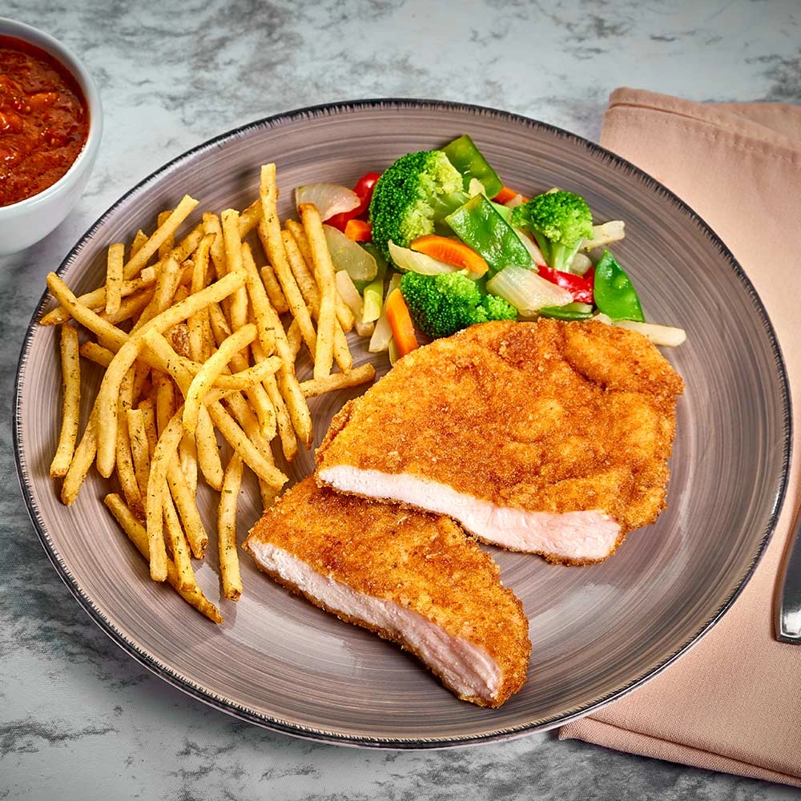

Pechugas Empanizadas

Descripcion
Ricas pechugas de pollo empanizadas con pan molido y freidas en aceite
Ingredientes:
- Pechugas de Pollo en Filete
- Leche de su preferencia
- Pan Molido
- Sal y Pimienta
- Aceite de Cocina
Preparacion
- En un plato hondo vertir una cantidad de leche suficiente para sumergir las pechugas
- En un plato plano poner una cantidad suficiente de pan molido
- Junto con el pan molido añadir sal y pimienta al gusto, y revolver para que se distribuya uniformemente
- Poner una sarten con suficiente aceite a fuego medio
- Sumergir las pechugas de pollo en la leche por un minuto cada una, despues recubrirla con el pan molido y poner a freir
- Asegurarse de freir las pechugas por ambos lados y suficiente tiempo para que se cocine el pollo adecuadamente, una ves esten listas guardar en un tupper o plato si se van a servir al momento, se recomienda poner servilletas para absorber el aceite
- Emplatar con una guarnicion para acompañar, se recomienda arroz, ensalada o papas a la francesa
Regresar a pagina principal